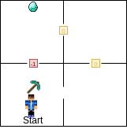

Malmo
Malmo serves as an API to communicate between python (or other languages) and Minecraft.
Planning
Initial goal is to develop a mission for Malmo that allows us to show its viability in explicability experiments. We already have previous domains, such as Robot Delivery, Blocks World, and Roaver to consider for simulation. However, it is necessary to re-imagine the domains, or create a new one, which is applicable to the Minecraft world.
Robot Delivery is a nice and relatively simple domain. Some actions in the domain are not viable for the Minecraft world, such as the concept of carrying stacked items on a tray. The Minecraft agent, while he only has one arm to wield items, has a large inventory that the items he is carrying are placed in.
The explicability experiment with the rover, which has a hidden goal of acting optimally with regards to its battery life, could also be simulated with Malmo. The Minecraft agent has a food bar that indicates the hunger of the agent. Should the agent's food bar drop too low, he will begin to lose health. If the agent is sprinting (only viable in continuous action mode if it's even supported in Malmo), the food bar depletes quickly. One idea would be to use this bar in a way similar to the battery of the roaver; however, an important aspect of the roaver experiment is that the human either didn't know the battery life of the roaver, or wasn't aware that the battery level could affect the cost of its actions.
- Obviously blocks world can be done, but where's the fun in that?
Domain ideas
-
Optimal pickaxe domain
Background
- There are multiple types of pickaxes in the game (wood, gold, iron, diamond, etc). The better the type pickaxe, the faster it can break through certain blocks. Materials can be mined when their respective blocks are broken. For instance, in order to mine diamonds, the agent must use an iron or diamond pickaxe to break a diamond ore block.
- Each type of pickaxe has a durability rating. When an agent breaks a block, it costs 1 durability. Blocks that break instantly cost 0 durability. Once the durability of a pickaxe has depleted, it breaks and disappears from the agent's inventory.
Idea
- Design levels in which the agent is trying to reach diamonds visible in the adjacent room. There is a block preventing the agent from entering the room directly. He has access to a diamond pickaxe, but has a hidden goal of preserving the durability of the pickaxe (so that he can mine diamonds with it later). Alternatively, the agent can take a longer, indirect route to the diamonds which will not require him to damage the pickaxe and is still faster than trying to break the block with his fists. This path is optimal for the agent's model, but the human's model (unaware of the cost of breaking the block or the remaining durability of the pickaxe) would prefer the agent take the more direct route to reach the diamonds faster.

- This idea can be extended to the agent executing a plan that is closest to the human's desired plan while still not being entirely explicable. For instance, if the human's model requires the agent to break more blocks than the durability remaining on his pickaxe will allow, he could learn to take a third path that is more direct than the unobstructed path and has few enough blocks to be a feasible plan.